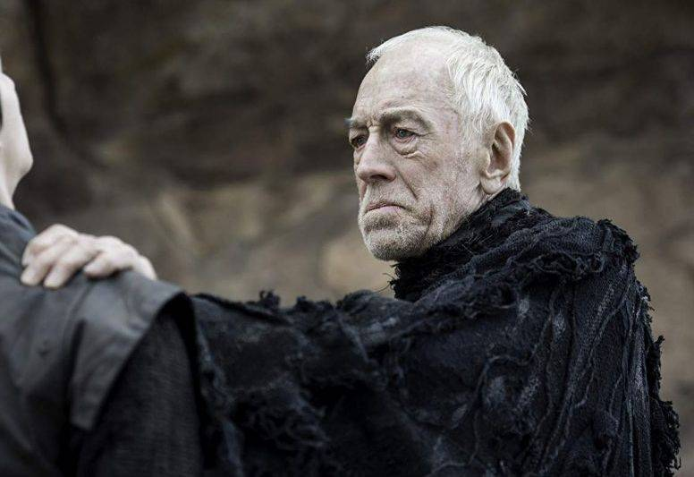

Ilha do Medo 2010 Elenco



Nos anos 1950, a fuga de uma assassina leva o detetive Teddy Daniels e seu parceiro a investigarem o seu desaparecimento de um quarto trancado em um hospital psiquiátrico. Lá, uma rebelião se inicia e o agente terá que enfrentar seus próprios medos..
O que um bom filme de suspense precisa ter? Ação? Nem tanto. Um bom elenco? Ajuda. Roteiro e direção de qualidade? Certamente. As perguntas e respostas anteriores sintetizam o que é Ilha do Medo, filme estrelado por Leonardo DiCaprio apoiado por um elenco competente, multinacional e muito luxuoso.
Sobre Ilha do Medo
Em 1954, os agentes federais dos Estados Unidos, Edward "Teddy" Daniels e seu novo parceiro Chuck Aule viajam para o Hospital Ashecliffe para os criminosos insanos em Shutter Island, no Boston Harbor. Eles estão investigando o desaparecimento da paciente Rachel Solando, encarcerada por afogar seus três filhos. Sua única pista é uma nota enigmática encontrada escondida no quarto de Solando: "A lei de 4; quem é 67?". Os dois homens chegam pouco antes de uma enorme tempestade, impedindo seu retorno ao continente por alguns dias.